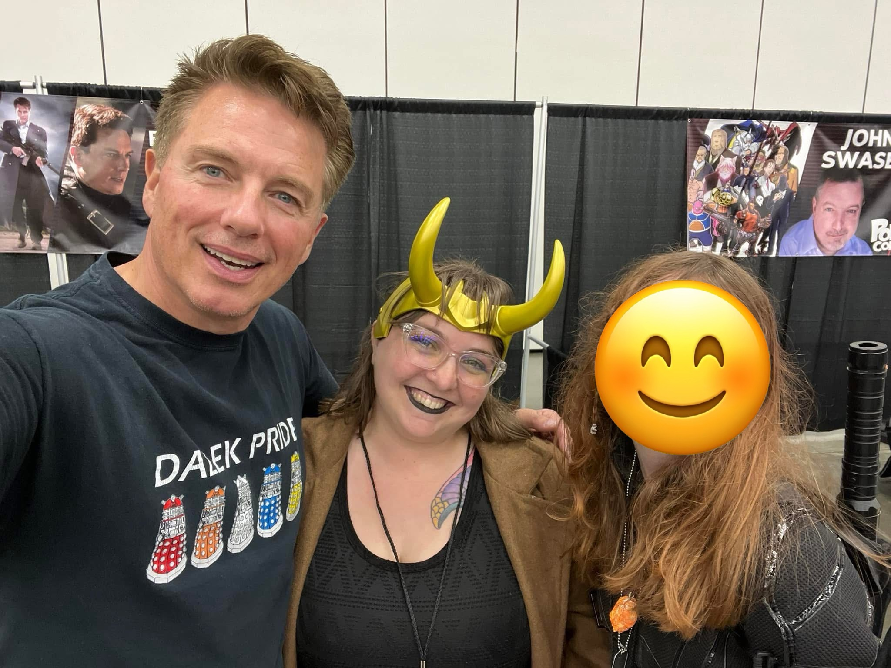
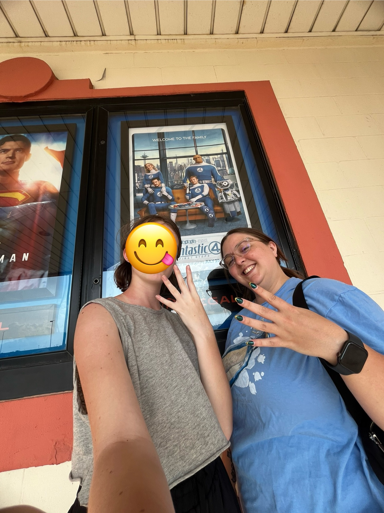
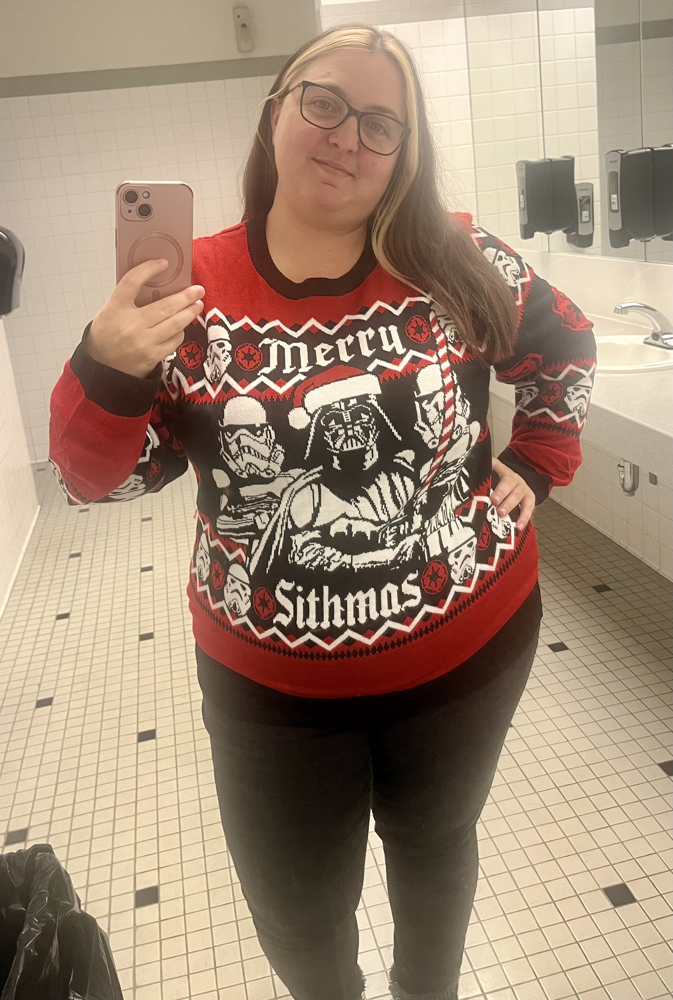
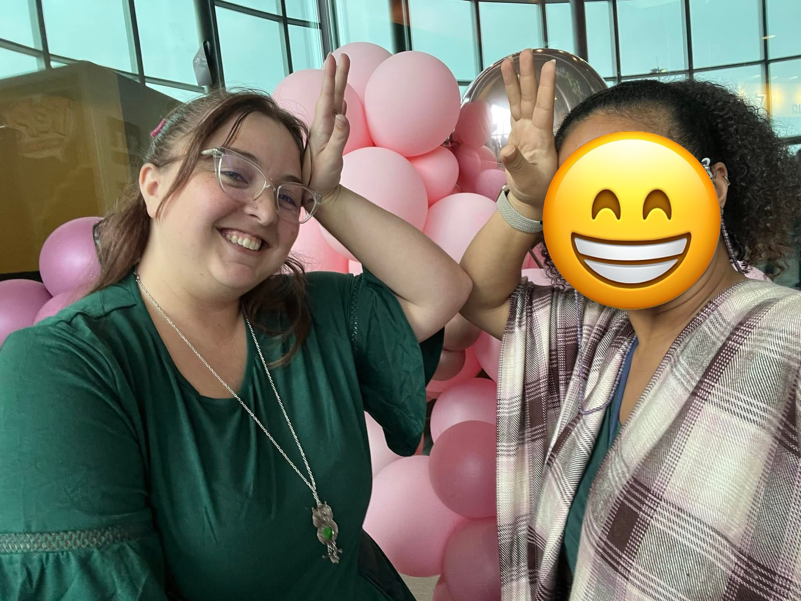
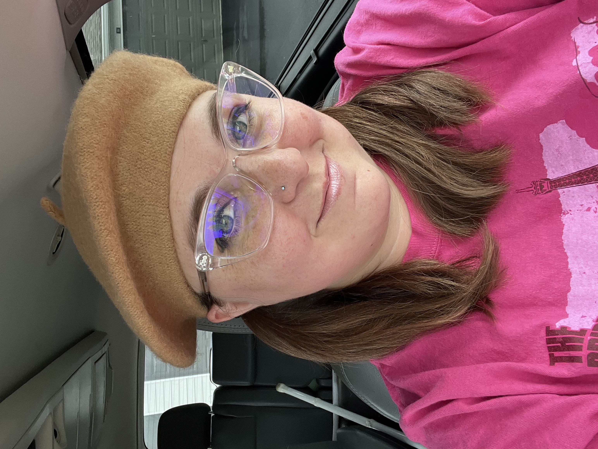
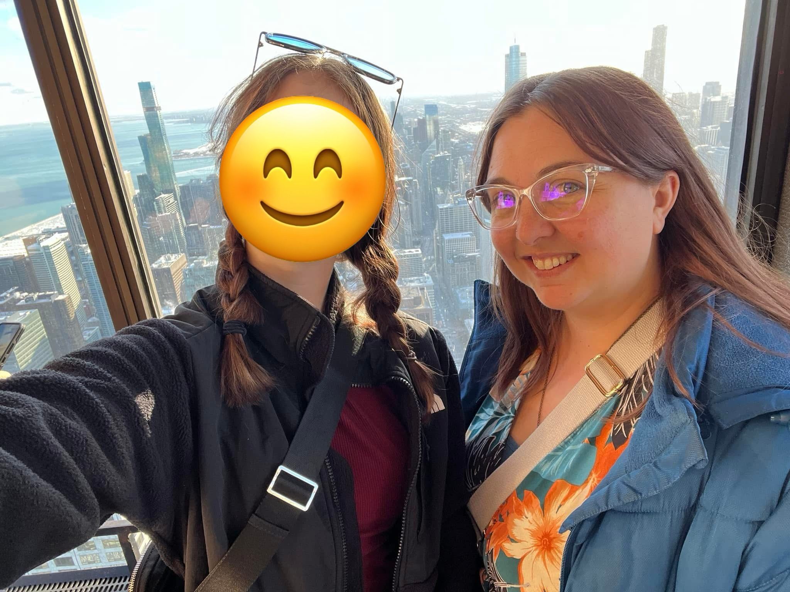
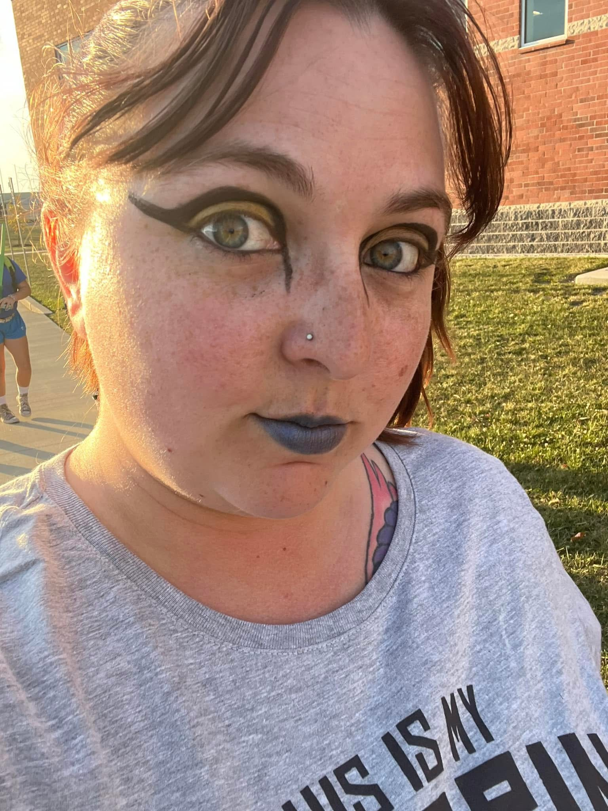
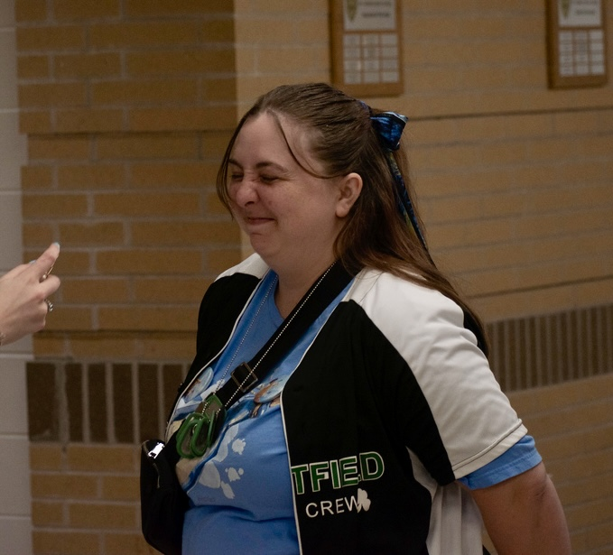
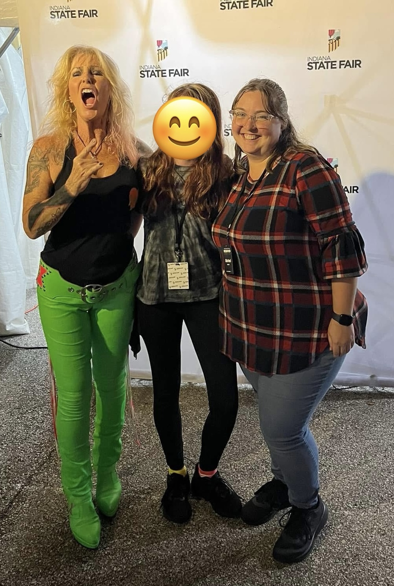
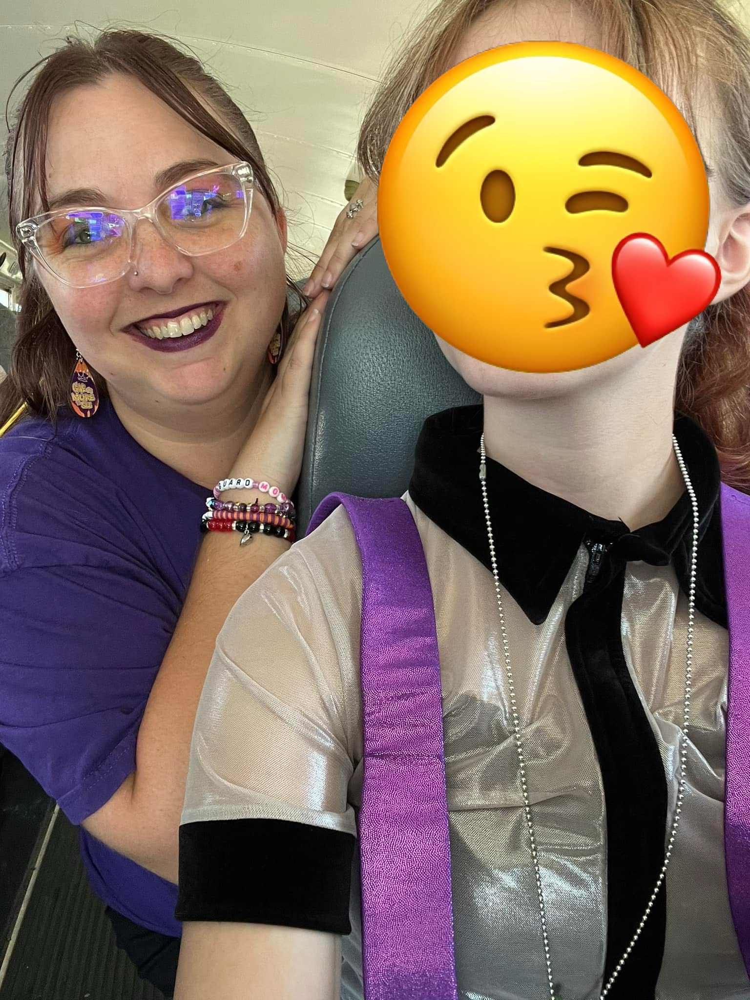

BRANCH ANALYSIS
MONITORING VARIANT ACTIVITY

Temporal Archive Entry — Variant sighting logged.

Branch deviation recorded.

Nexus fluctuation spike detected.
Unauthorized timeline activity.
Temporal variance under review.

Branch growth accelerating.

Multiversal anomaly flagged.

Surveillance capture secured.
Variant proximity confirmed.
Timeline integrity compromised.

Branch classification pending.
Nexus signature expanding.

Stability threshold exceeded.
Temporal echo detected.
Variant behavioral observation.
Branch divergence confirmed.

Chrono-displacement event.

Timeline under surveillance.

Anomaly containment attempt logged.
Branch escalation event.

Multiversal instability ongoing.